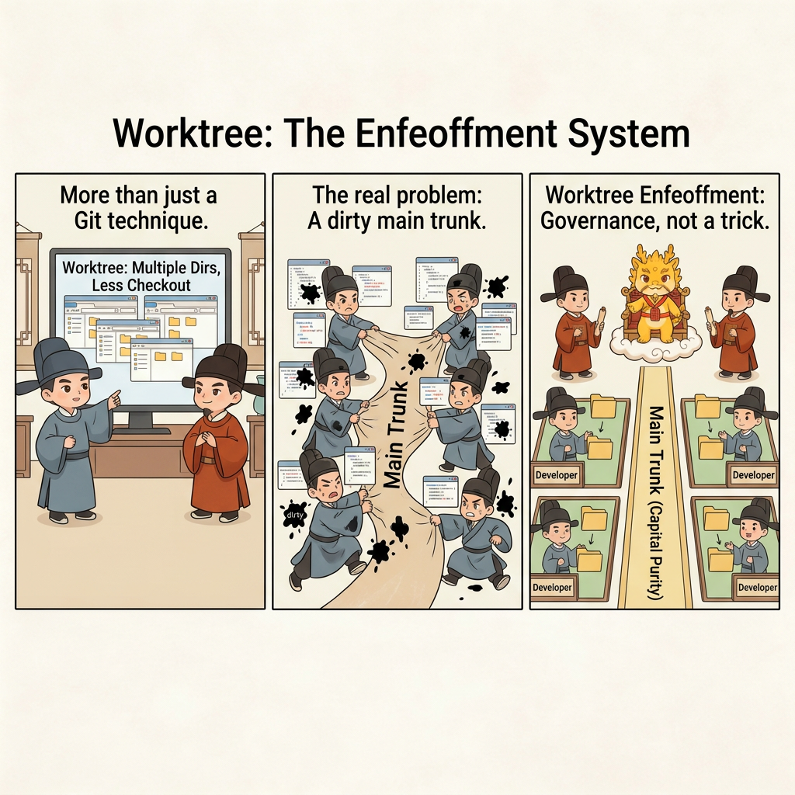
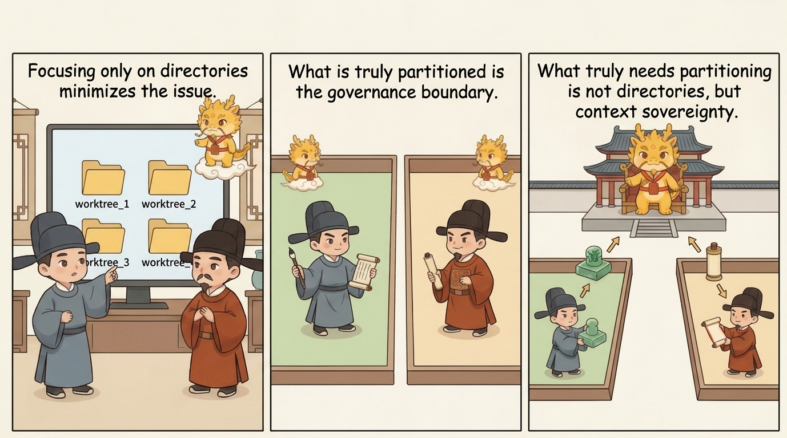
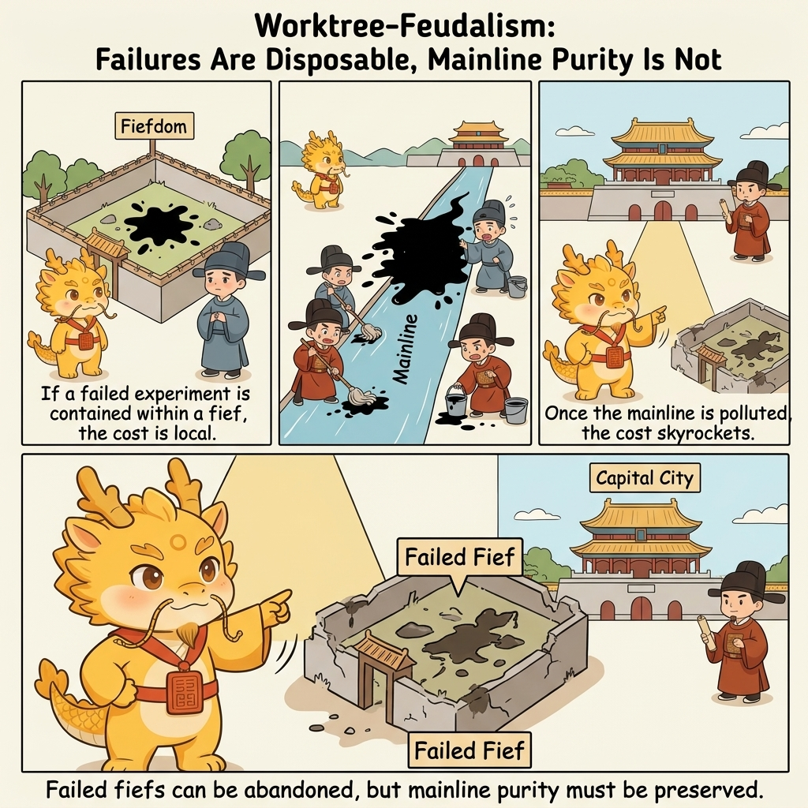

Deep Water
Worktree Enfeoffment

Worktree Enfeoffment: Fiefs, Entering the Capital, and Mainline Purity
Table of Contents
- What This Page Solves
- Spotting the Problem: Why the Mainline Gets Dirty So Quickly in Team Collaboration
- Explaining the Problem: Why What Really Needs Enfeoffment Is Not Directories but Context Sovereignty
- Solving the Problem: How Worktree Enfeoffment Supports Team Collaboration and Mainline Purity
- Common Misunderstandings
- One-Line Conclusion
- Related Pages
What This Page Solves
When many people first hear git worktree, they picture only a small technical convenience: opening several working directories so that switching branches requires fewer checkouts.
If that were all it meant, this page would not need to exist.
Inside Cyber-Ming-Protocol, worktree enfeoffment is not "a more convenient Git posture." It is a governance system aimed directly at deep-water team collaboration. It solves not "how can many people change code at the same time," but a much harder problem:
Why the mainline should not become the battlefield of shared dirty context, and why real collaboration is not many people stirring the same pot of context but one person per fief, one cabinet per fief, and then selective entry into the capital.
So the real questions here are:
- Why, in high-risk collaboration, the mainline fears dirty context more than it fears lots of changes
- Why worktree enfeoffment is first a model of human collaboration, not an AI trick
- Why one person per fief and one cabinet per fief preserve mainline purity better than many people sharing one battlefield
- What it means to enter the capital, and why the mainline should be treated like a capital city rather than a front-line construction site
The central judgment is this:
The essence of collaboration is not sharing context. It is partitioning context.
One more boundary should also be stated honestly. What this page offers first is a governance model for deep-water team collaboration, not a fully battle-tested field manual that has already settled every institutional detail for very large teams. It is already strong enough to answer questions about mainline purity, units of collaboration, responsibility boundaries, and the rhythm of entering the capital. But role allocation, cross-fief conflict arbitration, organizational cost, and merge rhythm in larger teams still need more real samples before they can be treated as settled.
Spotting the Problem: Why the Mainline Gets Dirty So Quickly in Team Collaboration
Many teams imagine collaboration in roughly the same way:
- Everyone circles around the same repository mainline
- Everyone keeps pulling fresh changes onto that same line
- AI gets mixed into each person's local context, frequent trial-and-error, and temporary patches
- Review, rollback, and overtime are then used to drag the mainline back into a barely acceptable state
That model can limp along in shallow water. In deep water, it easily pushes the mainline into a more dangerous state: the mainline code may not be fully broken yet, but the mainline context has already become dirty.
That dirtiness is not just ugly code style. It means several things begin happening at once.
First, Temporary Exploration and Formal Advance Get Mixed Together
You meant only to try a probe, verify one chain, or perform one risky demolition. Instead, all the trial traces, temporary patches, and half-finished structures fall directly into the same mainline work area.
At that point the system may still look collaborative, but in reality it is continuously pushing experimental debris toward the mainline.
Second, Responsibility Boundaries Start Evaporating
As soon as many people stir the same mainline pot, you quickly get situations like these:
- Nobody can clearly say who broke this part first
- Nobody can clearly say who stacked this rescue patch on top
- Nobody can clearly say which window brought this context contamination in
Once responsibility boundaries evaporate, the team becomes much less able to judge whom to interrupt, where to roll back, and who should take over.
Third, Cleaning Up Failed Experiments Becomes Absurdly Expensive
If failed exploration happens inside an isolated fief, the worst case is usually just deleting that failed territory. But if failed exploration happens right next to the mainline, then you are no longer "deleting one experiment." You are cleaning up a pile of mutually entangled damage.
What is truly expensive in deep water is almost never a few extra working directories. What is expensive is:
- Mainline contamination
- Lost rollback handles
- Semantic cross-contamination after multi-person collaboration
- Failed exploration entangled with genuine results
Fourth, Team Collaboration Degrades into Shared Dirty Context
This is the easiest point to miss. Many teams think they are sharing project knowledge. In reality, what they often share is a mixed context that has never been judged, isolated, or detoxified.
And once the context itself gets dirty, AI acceleration no longer amplifies collaboration. It amplifies contamination speed.
So the first judgment this page needs to nail down is:
What the mainline fears most is not frequent change. It is being dragged into a battlefield of shared dirty context by many people and many windows at once.
Explaining the Problem: Why What Really Needs Enfeoffment Is Not Directories but Context Sovereignty
What is genuinely new about worktree enfeoffment is not that it opens more directories. It rewrites the collaboration problem from "how do we share one workspace" into "how do we cut several sovereignty boundaries apart."

First, the Object of Enfeoffment Is Not AI but Human Developers
This boundary needs to be made explicit first.
Worktrees are not corridors for AI to roam everywhere. They are physically isolated fiefs prepared for human developers. Each fief corresponds to a clearly identified human principal, and that person governs the territory together with their own AI cabinet.
In other words:
- The lord of the fief is a human, not an agent
- AI is the cabinet inside the fief, not a roaming vassal
- What is truly being split apart is human governance boundary, not just folder paths
Second, One Person per Fief, One Cabinet per Fief
This is the most important institutional expression of worktree enfeoffment.
"One person per fief" does not simply mean that each person gets a directory. It means:
- Each developer governs their own executor and auditor positions inside their own worktree
- Trial-and-error, refactoring, probing, and verification are completed locally within the territory
- Fiefs remain isolated from one another, do not share dirty context, and do not take over one another's half-finished narratives
"One cabinet per fief" then pushes the point further: every territory should contain its own local governance loop, rather than several people sharing one agent conversation chain, one dirty context, and one tangled experimental history.
Only then does collaboration finally stop being many people stirring the same pot and start becoming many people governing separate territories.
Third, Vassals May Govern, but They Have No Right of Self-Coronation
This sentence matters a great deal.
The fief is not a miniature copy of the mainline, and success inside a fief does not automatically qualify for entry into the mainline. A fief can certainly enjoy a high degree of autonomy:
- It can explore
- It can refactor
- It can try and fail
- It can iterate repeatedly
But the fief does not have the right of self-coronation. That means a result from the fief does not enter the mainline simply because "it looks good over here." It still has to arrive with:
- Chronicle handles
- A white-box evidence chain
- A rollback boundary
- Final audit before it enters the capital
Only then does local autonomy avoid collapsing back into "everyone polishing their own hallucination in private until it looks impressive enough."
Fourth, the Mainline Should Be the Capital, Not a Front-Line Construction Site
This is what mainline purity is really protecting.
The meaning of the mainline is not that it must absorb every local exploration. It is that it should absorb only results that have already passed white-box verification and can still be inherited by the mainline safely.
It should be like a capital city:
- It does not bear every local trial and error itself
- It does not store every half-finished context
- It does not clean up after every failed experiment
Its job is final aggregation, judgment, and long-term maintainability.
So "entering the capital" is not a romantic metaphor. It is an institutional boundary:
The frontier may experiment messily. The capital may not absorb results messily.
Solving the Problem: How Worktree Enfeoffment Supports Team Collaboration and Mainline Purity
Once the earlier judgments are brought down to the operational level, worktree enfeoffment can be compressed into five very clear moves.
Step 1: Split the Land First, Then Start Work
As soon as the task enters high-risk demolition, architectural rewrite, parallel exploration, or multi-person collaboration, the default should no longer be "start working around the mainline." The default should be to split the land first:
- Enfeoff by person, not by letting agents roam around at will
- Draw fiefs around clear objectives, not around territory that keeps expanding without limit
- Split along risk surfaces, not by mixing several big problems inside one territory
The most important thing here is not the Git command itself. It is the shift in mindset:
Establish the boundary first. Only then allow progress.
Step 2: The Fief Governs Itself, but Local Autonomy Must Still Carry Governance
Once the fief exists, its owner must run a full governance loop inside it rather than treating the worktree as a mere isolated directory.
That means the territory still needs:
- Atomic checklists
- Dense Git chronicles
- Separation between executor and auditor
- White-box physical reconciliation
- Interruption and renewal when necessary
So worktree enfeoffment does not replace the earlier rituals. It provides them with a more stable physical carrier.
Without those rituals, a fief becomes just another dirty battlefield outside the mainline. With them, it becomes worthy of the name "fief."
Step 3: Enter the Capital with Mature Artifacts, Not with Dirty Context
The moment when a fief truly relates to the mainline is not when someone says "this is probably good enough now." It is when the result enters the capital.
Entering the capital is not the same thing as just opening a PR. It means returning to the mainline with a package that can actually be judged:
- What exactly this fief solved
- What the key chronicles and state transitions were
- What evidence proves the result actually stands up
- Where the rollback handles are if the result must be reversed
Only if that package stands up does the mainline deserve to accept it.
So the core of entering the capital is not "submit the code." It is this:
Deliver a result that has already been refined inside the fief until it is pure enough to audit, pure enough to inherit, and pure enough to present to the capital for judgment.
Step 4: Failed Fiefs May Be Discarded; Mainline Purity May Not Be
This sounds like the coldest part of the model, but it is actually the most practical.

The most valuable thing about worktree enfeoffment is not that every fief succeeds. It is that even failure no longer has to contaminate the mainline.
That gives the team a genuinely cheaper way to fail:
- If one fief fails, discard the territory and start again
- If one exploration goes off course, sacrifice the local line only
- If one set of AI contexts turns dirty, stop the damage inside that fief
instead of running disaster cleanup on the mainline every time.
So what mainline purity truly preserves is not just clean code. It preserves a long-term collaborative order in which the team still retains:
- Clear responsibility boundaries
- Explicit rollback handles
- Auditable merge gates
- A mainline order that failed exploration cannot easily drag down
Step 5: Team Scale Does Not Mean One Person Audits Everyone's AI - It Means Each Person Bears Responsibility Inside Their Own Fief
This point matters especially in team settings.
Worktree enfeoffment naturally supports teams not because a single chief architect can suddenly white-box audit everyone, but because it redefines the unit of collaboration:
- No longer one big repository full of one shared stew of context
- But many territories, each carrying its own governance loop
That changes the scaling model of collaboration as well:
- Each developer governs their own AI cabinet inside their own fief
- Each fief is responsible for its own evidence chain and its own purity
- The mainline sees only the mature results that have entered the capital, not the mud of the frontier
That is why worktree enfeoffment is not just a solo technique. It is a model of human collaboration.
At this point the page already provides a strong institutional blueprint for team collaboration: how to defend the mainline, how to draw fiefs, how to establish responsibility boundaries, and how to set the rhythm of entering the capital. But if you keep pushing into questions like interface disputes between fiefs in larger teams, how final arbitration load should be distributed, how unified standards should be enforced, and what the long-term organizational cost looks like, those questions still need future battle reports and real samples. It would be dishonest to pretend they are all already solved here.
Common Misunderstandings
First Misunderstanding: Worktree Enfeoffment Is Just a More Convenient Git Technique
No. The real core here is not that the directories are cut more neatly. It is that context sovereignty is cut more clearly. Without a human principal, local autonomy, and judgment on entering the capital, extra directories do not automatically create mainline purity.
Second Misunderstanding: Branches Are Enough, So There Is No Need to Talk About Worktrees
Branches solve version lineage. Worktrees emphasize physical isolation and context isolation. The former gives you different historical lines. The latter means you really do not have to stir the same dirty working scene over and over again.
Third Misunderstanding: Enfeoffment Means People No Longer Collaborate
Exactly the opposite. Enfeoffment does not cancel collaboration. It gives collaboration boundaries. Collaboration without boundaries easily degrades into mutual contamination. Collaboration with boundaries is what makes high-quality convergence on the mainline possible.
Fourth Misunderstanding: If Something Works Inside the Fief, It Should Merge into the Mainline Directly
No. Vassals may govern, but they have no right of self-coronation. Success inside the fief must still pass through entry into the capital and mainline judgment before it deserves to live in the capital.
Fifth Misunderstanding: This System Fits Only Solo Work, Not Teams
That is exactly backwards. One of its greatest strengths is that it lets teams stop relying on shared dirty context and instead rely on many independent fiefs, each carrying its own governance loop. The larger the team becomes, the more important that boundary often becomes.
Sixth Misunderstanding: This Page Already Solves Every Practical Detail of Large-Team Collaboration
It does not. This page already offers a powerful governance model for team collaboration, but its strongest part is still its structural judgment, its institutional boundaries, and its logic of mainline purity - not a claim that every role allocation, every conflict-arbitration rule, and every organizational cost has already been fully proven in large teams. That is not retreat. It is honest boundary-setting.
One-Line Conclusion
What worktree enfeoffment is really trying to nail down is not merely "many people can develop in parallel," but this:
In deep-water team collaboration, what truly needs isolation is not several copies of code. It is several bundles of context sovereignty, each responsible for its own progress, its own audit, and its own traces, and only later allowed to enter the capital. Only then does the mainline avoid becoming a battlefield of shared dirty context.
Once mainline purity holds, team collaboration stops being a machine for manufacturing messes for one another and becomes local self-government across many fiefs, followed by convergence in the capital.